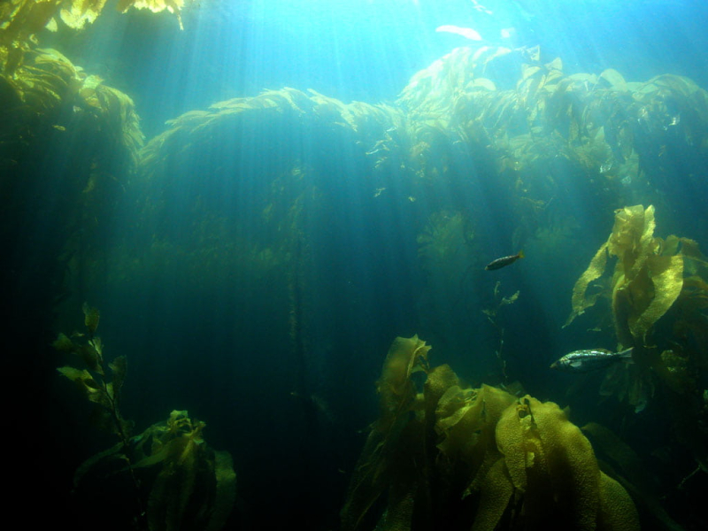
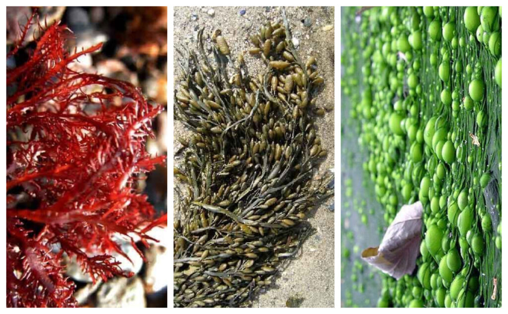

Hay que recordar que toda especie vegetal marina al igual que las terrestres necesitan la luz para vivir y poder realizar la fotosíntesis por lo tanto viven en la zona litoral y nerítica que es donde llega el sol. Dentro de las especies vegetales encontramos una de las más comunes que son el fitoplancton, las algas marinas o los liquenes.
- El fitoplacton:
- Los liquenes:
- Las algas:
- Forman parte de la especie del placton. Los cuales viven flotando sobre el agua y son capaces de realizar la fotosíntesis.
Son de vital importancia dado que son los productores primarios más importantes que podemos encontrar en los océanos presentando
una gran biodiversidad y diferentes especies atendiendo a las condiciones naturales de la zona. Se distribuyen por todos los océanos
y mares del planeta Tierra cuya función primordial es el mantenimiento de la cantidad de oxígeno en el océano y el atmósfera.
- Las podemos encontrar en el litoral y son una combinación de simbiosis entre los hongos y las algas.
De las olas los hongos extraen el agua necesaria para alimentar a las algas y estás aportarán sustancias orgánicas
provenientes de la fotosíntesis que permitirán crecer y reproducir los hongos.
- Dentro de la gran variedad de algas que podemos encontrar (Siempre recordando que se diferencian de
las plantas superiores dado que carecen de hojas, tallos, sistemas vasculares y raíces)
encontramos la huiro qué es la especie de alga marina más común que podemos encontrar en cualquier litoral.

- Las funciones de las algas principalmente es de alimento y refugio a las diferentes especies de animales
así como zona de depósito de los huevos y crías de muchas veces.Podemos encontrar algas tanto en la superficie
del agua (Denominada alga planctónicas) como heridas a las piedras y rocas (Denominada algas bentónicas).
Tipos de algas
Principalmente las algas se pueden dividir en tres grandes grupos y tipos:

- Algas pardas (Feofitos). Son los tipos de algas marinas de mayor tamaño y viven con preferencia los mares polares y en profundidades oceánicas donde la temperatura es baja.
- Las algas rojas (Rodofitos – Rhodophyta). Tal como indica el nombre tiene un color rojizo creciendo en las costas subtropicales y tropicales.
- Algas verdes. Son las que más abundan también conocidas con el nombre de clorofitos y son uno de los organismos más antiguos de la tierra podían encontrar en todos los mares y océanos con una abundante variedad de especies en algas verdes.